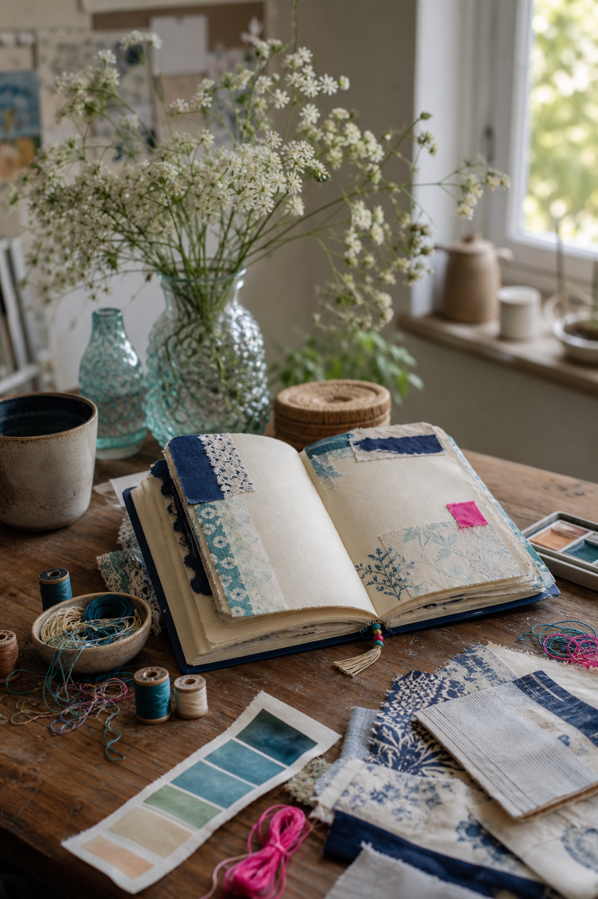
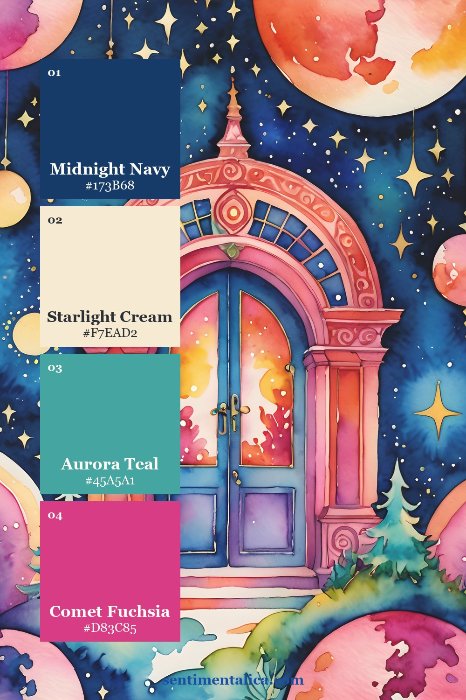
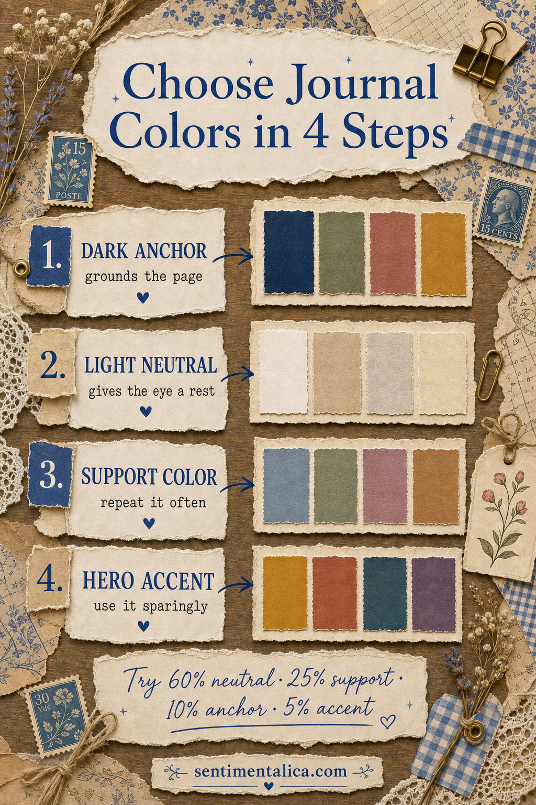
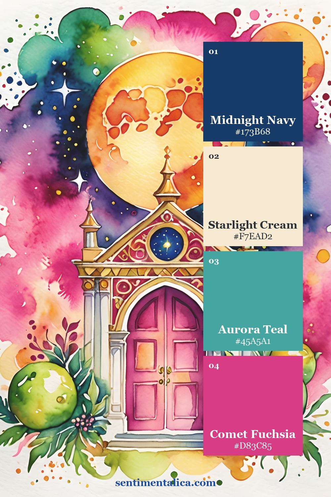
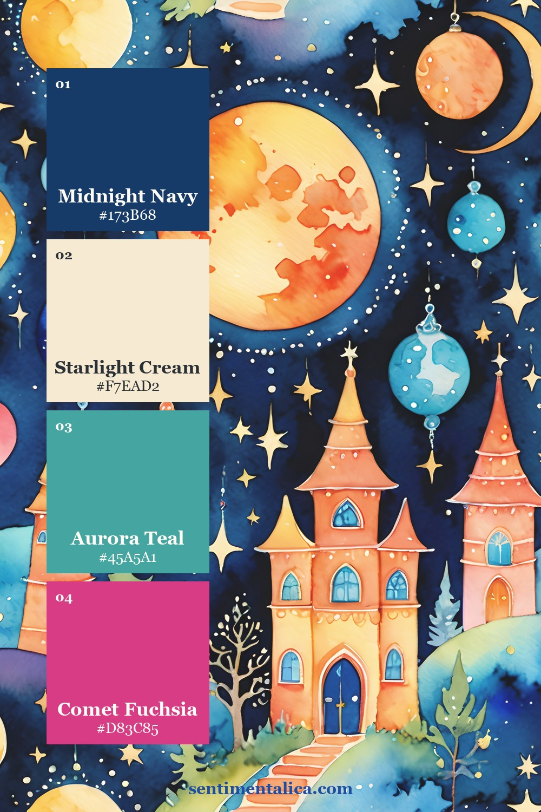
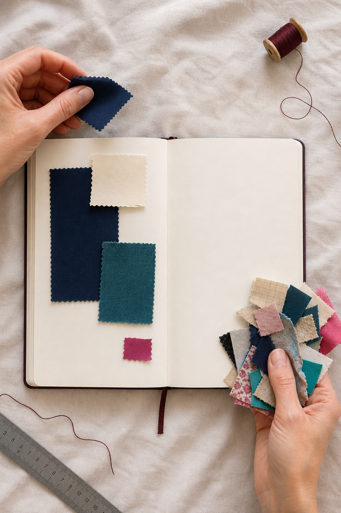
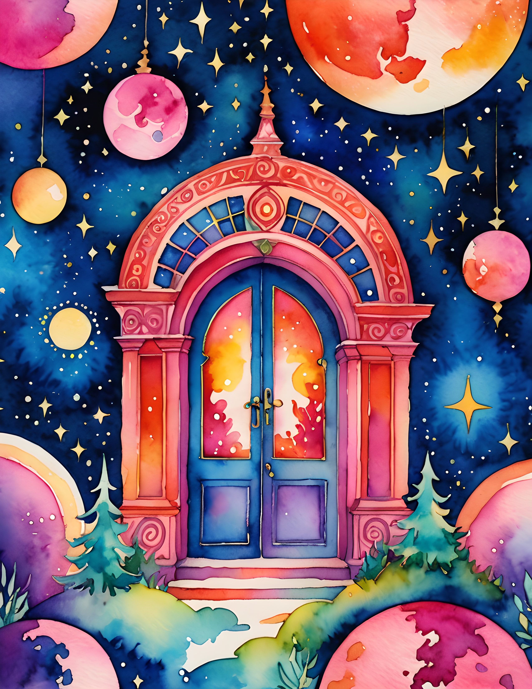
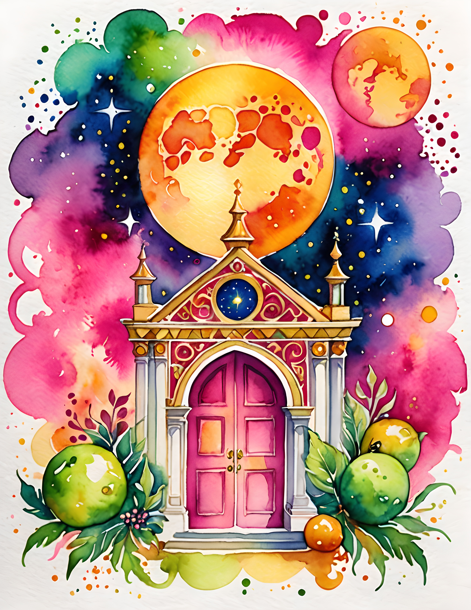
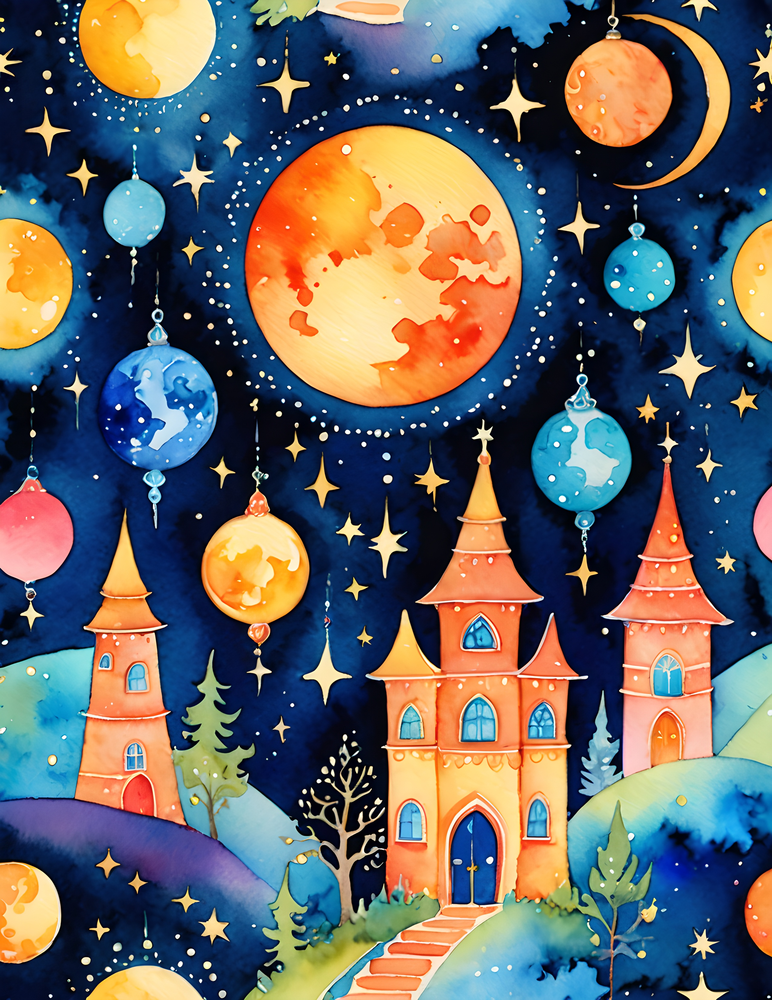

Bright color is not the problem; equal visual volume is. A page becomes chaotic when every hue asks for attention at once. The solution is to assign four colors different jobs and leave the remaining rainbow in supporting details.

Choose one dark anchor first
Midnight navy gives vivid watercolor room to glow. Use it in one confident area—a pocket, mat, painted edge, or fabric strip—then repeat it once in a much smaller detail. The anchor creates a visual boundary without turning the page dull.

Make cream the largest color
A strict light neutral is the pause between saturated notes. Let starlight cream occupy the background, journaling space, or largest torn layer. Bright colors feel more luminous beside it, and the writing remains easy to read.

Repeat teal; ration fuchsia
Aurora teal is the support color. Repeat it in three modest places so the eye can move through the spread. Comet fuchsia is the hero accent: one tab, one stitch line, or one tiny punched shape is enough. When the accent appears everywhere, it stops being special.


Edit by subtraction
Lay every tempting scrap beside the journal, then move only the four chosen colors onto the page. If another hue is essential, let it remain inside the focal image rather than adding a matching embellishment. This preserves the joyful rainbow feeling without multiplying competing objects.

See the source pages
The Bright Rainbow collection provides celestial architecture, watercolor washes, and bold transitions that can lead a whole spread. Use one printed page as the visual event, then layer quieter personal materials around it.



For a commercial-use watercolor image pack with this vivid celestial mood, explore the matching Bright Rainbow collection and keep your own journaling, photographs, and tactile scraps as the final layer.
Disclosure: The palette infographic and styled workspace photographs were created with AI-assisted image tools. Palette cards and carousel images use genuine pages from the featured collection.